Univariate Viz — Exercises
Before starting, review the ICA Instructions ⭐ for details on pair programming and activity procedures.
Setup
Load the data first.
Exercise 1: Research Questions
Let’s dig into the hikes data, starting with the elevation and difficulty ratings of the hikes:
peak elevation difficulty ascent length time rating
1 Mt. Marcy 5344 5 3166 14.8 10.0 moderate
2 Algonquin Peak 5114 5 2936 9.6 9.0 moderate
3 Mt. Haystack 4960 7 3570 17.8 12.0 difficult
4 Mt. Skylight 4926 7 4265 17.9 15.0 difficult
5 Whiteface Mtn. 4867 4 2535 10.4 8.5 easy
6 Dix Mtn. 4857 5 2800 13.2 10.0 moderate- What features would we like a visualization of the categorical difficulty
ratingvariable to capture?
We would like to see a bar chart with each of the difficulty ratings (1 through 7) and how common, or frequent, each rating is.
- What about a visualization of the quantitative
elevationvariable?
We would like to see a histogram to show the frequency of each elevation.
Exercise 2: Load tidyverse
We’ll address the above questions using ggplot tools. Try running the following chunk and simply take note of the error message – this is one you’ll get a lot!
In order to use ggplot tools, we have to first load the tidyverse package in which they live. We’ve installed the package but we need to tell R when we want to use it. Run the chunk below to load the library. You’ll need to do this within any .qmd file that uses ggplot().
Exercise 3: Bar Chart of Ratings - Part 1
Consider some specific research questions about the difficulty rating of the hikes:
- How many hikes fall into each category?
- Are the hikes evenly distributed among these categories, or are some more common than others?
All of these questions can be answered with: (1) a bar chart; of (2) the categorical data recorded in the rating column. First, set up the plotting frame:
Think about:
- What did this do? What do you observe?
This created a FRAME of a graph, however we have not selected the type of graph so it is not able to plot a data.
- What, in general, is the first argument of the
ggplot()function?
The ggplot argument established that this is a graph.
- What is the purpose of writing
x = rating?
This argument identifies the x variable
- What do you think
aesstands for?!?
I think it stands for aesthetics
Exercise 4: Bar Chart of Ratings - Part 2
Now let’s add a geometric layer to the frame / canvas, and start customizing the plot’s theme. To this end, try each chunk below, one by one. In each chunk, make a comment about how both the code and the corresponding plot both changed.
NOTE:
- Pay attention to the general code properties and structure, not memorization.
- Not all of these are “good” plots. We’re just exploring
ggplot.
Code
Code
Code
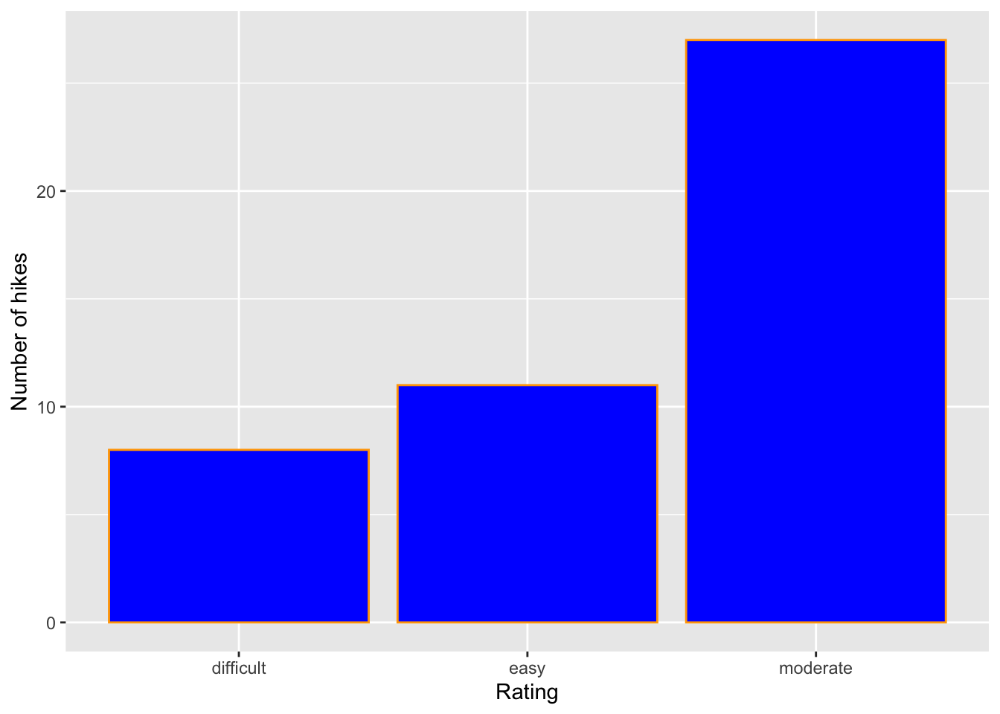
Exercise 5: Bar Chart Follow-up
Part a
Reflect on the ggplot() code.
- What’s the purpose of the
+? When do we use it?
“+” adds another component to the plot. We use it when we want to add a new aesthetic (geom, color, outline, etc)
- We added the bars using
geom_bar()? Why “geom”?
Geom defines a feature of an object in the plot, I assume it is short for geometric
- What does
labs()stand for?
labs()is short for labels and adds labels to the axis
- What’s the difference between
colorandfill?
colorcreates an outline butfillchanges the color of the bar
Part b
In general, bar charts allow us to examine the following properties of a categorical variable:
- observed categories: What categories did we observe?
The catagories were
Difficult,Moderate, andEasy
- variability between categories: Are observations evenly spread out among the categories, or are some categories more common than others?
Moderate is by far the most common rating, followed by easy. Diffucult is the least common catagory
We must then translate this information into the context of our analysis, here hikes in the Adirondacks. Summarize below what you learned from the bar chart, in context.
More than 25% of hikes in the Adirondacks are rated as Moderate. Just over 10% are rated as easy, but only 8% are rated as hard.
Part c
Is there anything you don’t like about this barplot? For example: check out the x-axis again.
I think that it would make more sense to have the bars in order from
DifficulttoEasy
Exercise 6: Sad Bar Chart
Let’s now consider some research questions related to the quantitative elevation variable:
- Among the hikes, what’s the range of elevation and how are the hikes distributed within this range (eg, evenly, in clumps, “normally”)?
- What’s a typical elevation?
- Are there any outliers, ie, hikes that have unusually high or low elevations?
Here:
- Construct a bar chart of the quantitative
elevationvariable. - Explain why this might not be an effective visualization for this and other quantitative variables. (What questions does / doesn’t it help answer?)
Code
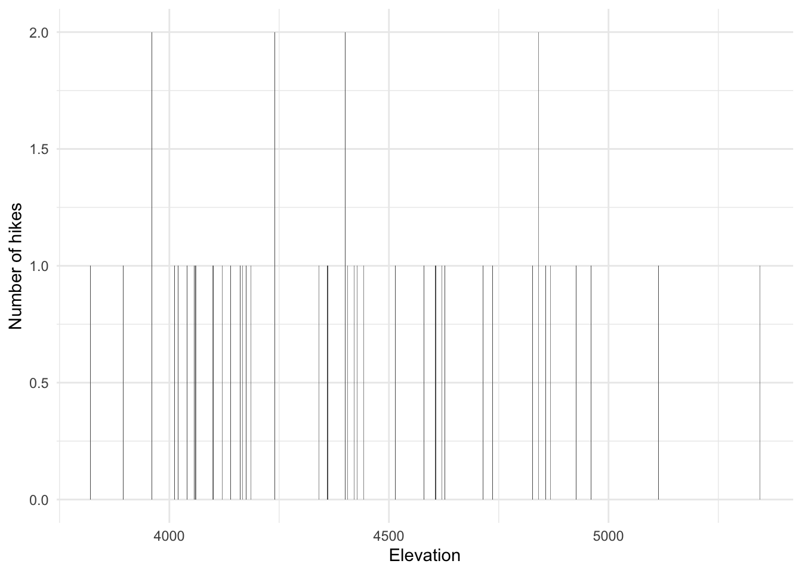
This is not very effective becuase there are too many elevations for the graph to be useful. This type of variable would be better represented by a histogram.
Exercise 7: A Histogram of Elevation
Quantitative variables require different viz than categorical variables. Especially when there are many possible outcomes of the quantitative variable. It’s typically insufficient to simply count up the number of times we’ve observed a particular outcome as the bar graph did above. It gives us a sense of ranges and typical outcomes, but not a good sense of how the observations are distributed across this range. We’ll explore two methods for graphing quantitative variables: histograms and density plots.
Histograms are constructed by (1) dividing up the observed range of the variable into ‘bins’ of equal width; and (2) counting up the number of cases that fall into each bin. Check out the example below:

Part a
Let’s dig into some details.
- How many hikes have an elevation between 4500 and 4700 feet?
Around 5 hikes have an elevation between 4500 and 4700 feet.
- How many total hikes have an elevation of at least 5100 feet?
Around 2 hikes have an elevation of at least 5100 feet.
Part b
Now the bigger picture. In general, histograms allow us to examine the following properties of a quantitative variable:
- typical outcome: Where’s the center of the data points? What’s typical?
- variability & range: How spread out are the outcomes? What are the max and min outcomes?
- shape: How are values distributed along the observed range? Is the distribution symmetric, right-skewed, left-skewed, bi-modal, or uniform (flat)?
- outliers: Are there any outliers, ie, outcomes that are unusually large/small?
We must then translate this information into the context of our analysis, here hikes in the Adirondacks. Addressing each of the features in the above list, summarize below what you learned from the histogram, in context.
Hikes in the Adirondacks range from 3800 and 5500 feet of elevation. Most hikes fall between 4000 and 4700 feet of elevation.
Exercise 8: Building Histograms - Part 1
2-MINUTE CHALLENGE: Thinking of the bar chart code, try to intuit what line you can tack on to the below frame of elevation to add a histogram layer. Don’t forget a +. If it doesn’t come to you within 2 minutes, no problem – all will be revealed in the next exercise.

Exercise 9: Building Histograms - Part 2
Let’s build some histograms. Try each chunk below, one by one. In each chunk, make a comment about how both the code and the corresponding plot both changed.
Code
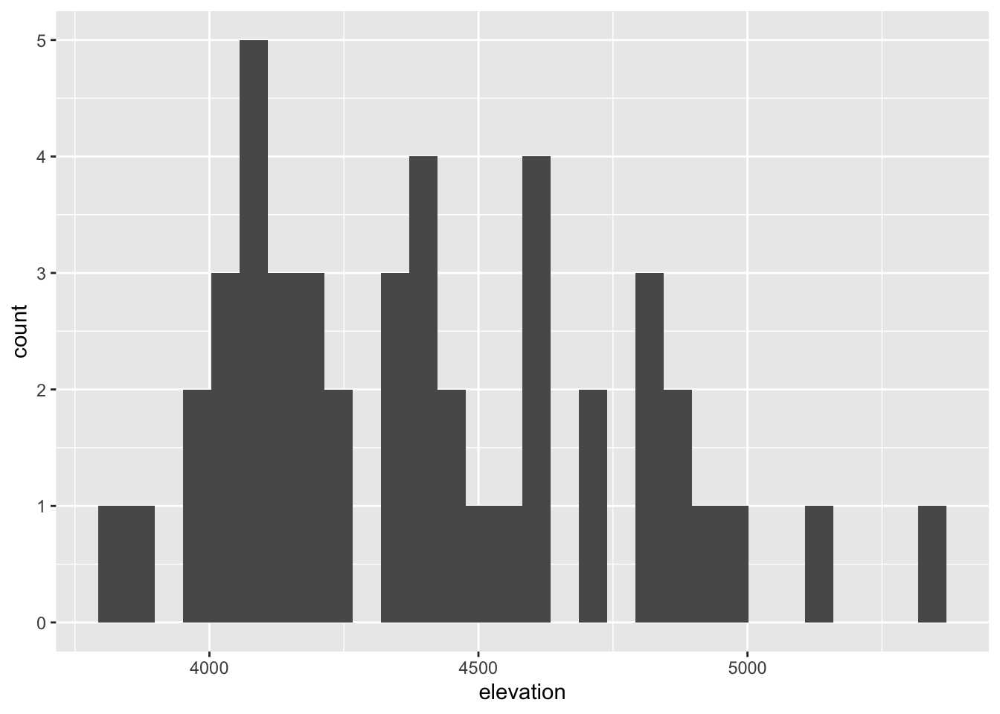
Code
Code
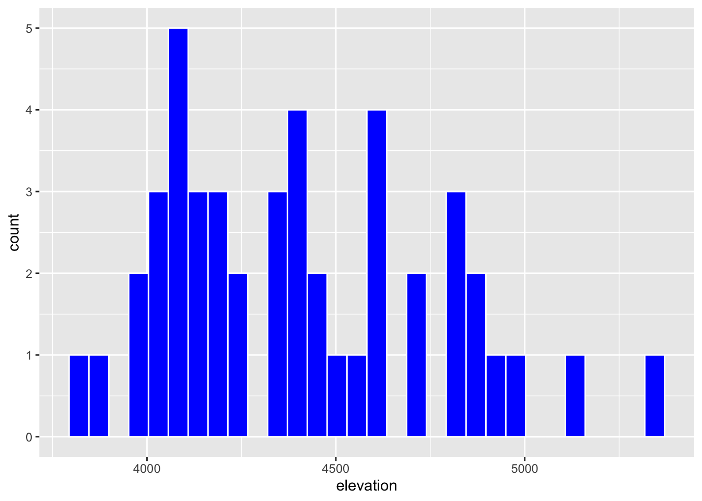
Code
Code
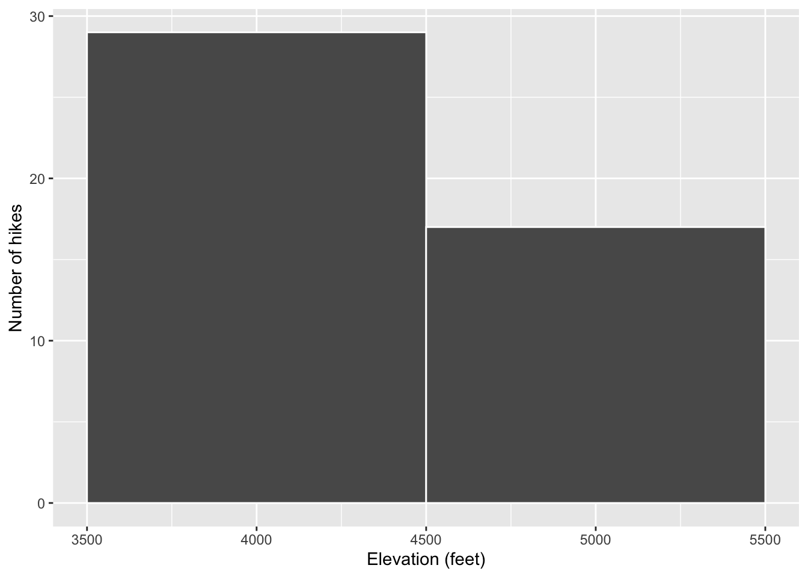
Code
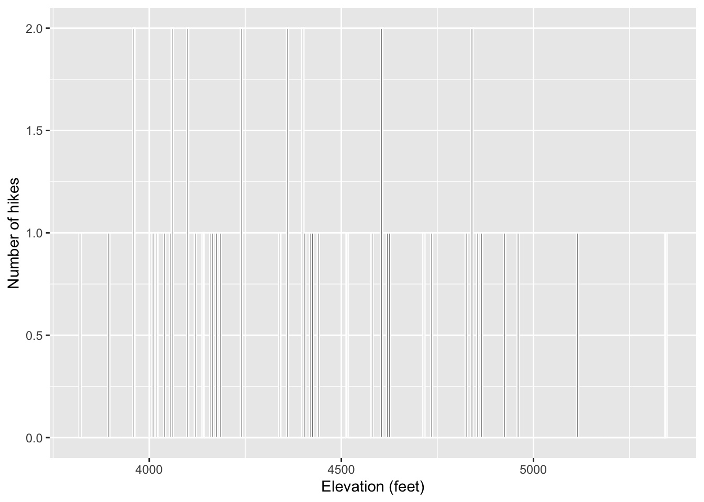

Exercise 10: Histogram Follow-up
- What function added the histogram layer / geometry?
geom_histogram
- What’s the difference between
colorandfill?
Color creates a border and fill changes the whole color
- Why does adding
color = "white"improve the visualization?
It allows you to see the bars individually
- What did
binwidthdo?
It changes the width of the bars
- Why does the histogram become ineffective if the
binwidthis too big (eg, 1000 feet)?
There are too few bars, makes it difficult to interprate
- Why does the histogram become ineffective if the
binwidthis too small (eg, 5 feet)?
The bars are so small and you cannot see the bars
Exercise 11: Density Plots
Density plots are essentially smooth versions of the histogram. Instead of sorting observations into discrete bins, the “density” of observations is calculated across the entire range of outcomes. The greater the number of observations, the greater the density! The density is then scaled so that the area under the density curve always equals 1 and the area under any fraction of the curve represents the fraction of cases that lie in that range.
Check out a density plot of elevation. Notice that the y-axis (density) has no contextual interpretation – it’s a relative measure. The higher the density, the more common are elevations in that range.
Questions
-
INTUITION CHECK: Before tweaking the code and thinking back to
geom_bar()andgeom_histogram(), how do you anticipate the following code will change the plot?geom_density(color = "blue")geom_density(fill = "orange")
I think that
geom_density(color = "blue")will add a blue border to the line.
I think that
geom_density(fill = "orange")will make the area under the line orange
- TRY IT! Test out those lines in the chunk below. Was your intuition correct?
Code
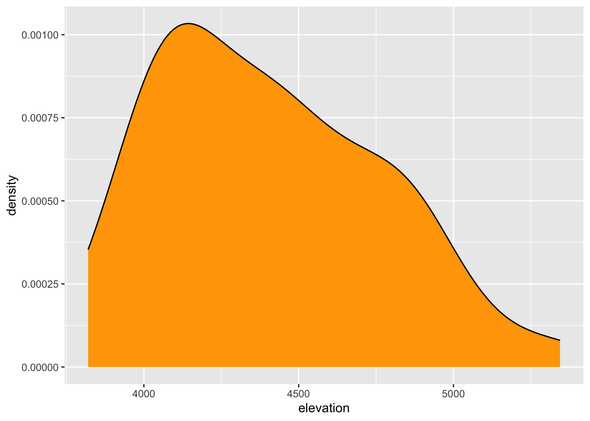
- Examine the density plot. How does it compare to the histogram? What does it tell you about the typical elevation, variability / range in elevations, and shape of the distribution of elevations within this range?
NEED TO DOOOOO
Exercise 12: Density Plots vs Histograms
The histogram and density plot both allow us to visualize the behavior of a quantitative variable: typical outcome, variability / range, shape, and outliers. What are the pros/cons of each? What do you like/not like about each?
Bar chars are best for car
Exercise 13: Code = communication
We obviously won’t be done until we talk about communication. All code above has a similar general structure (where the details can change):
- Though not necessary to the code working, it’s common, good practice to indent or tab the lines of code after the first line (counterexample below). Why?
Code

Code

- Though not necessary to the code working, it’s common, good practice to put a line break after each
+(counterexample below). Why?
Code

Code
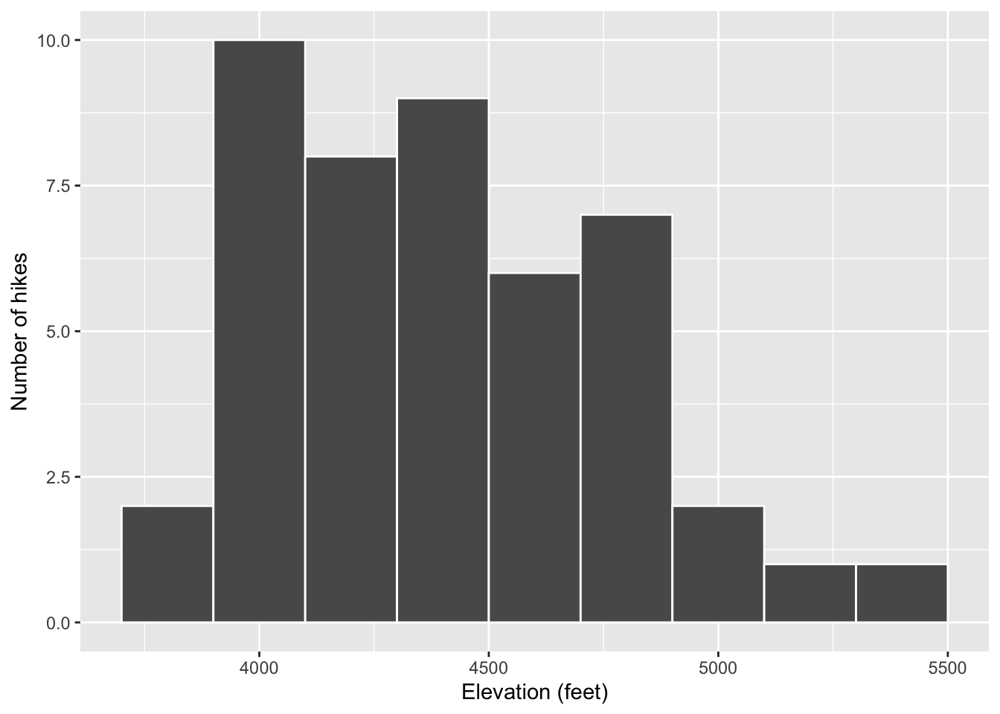
Exercise 14: Practice
Part a
Practice your viz skills to learn about some of the variables in one of the following datasets:
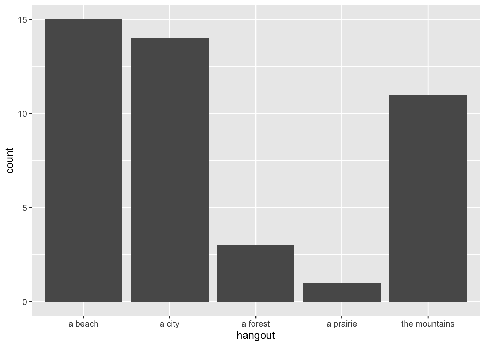
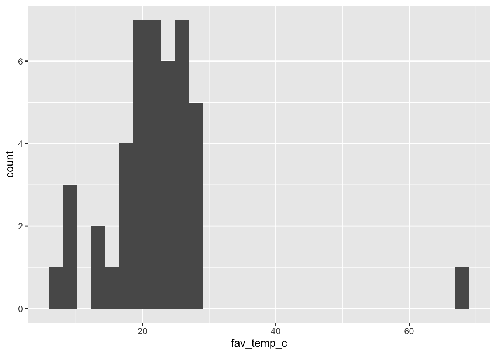
Code
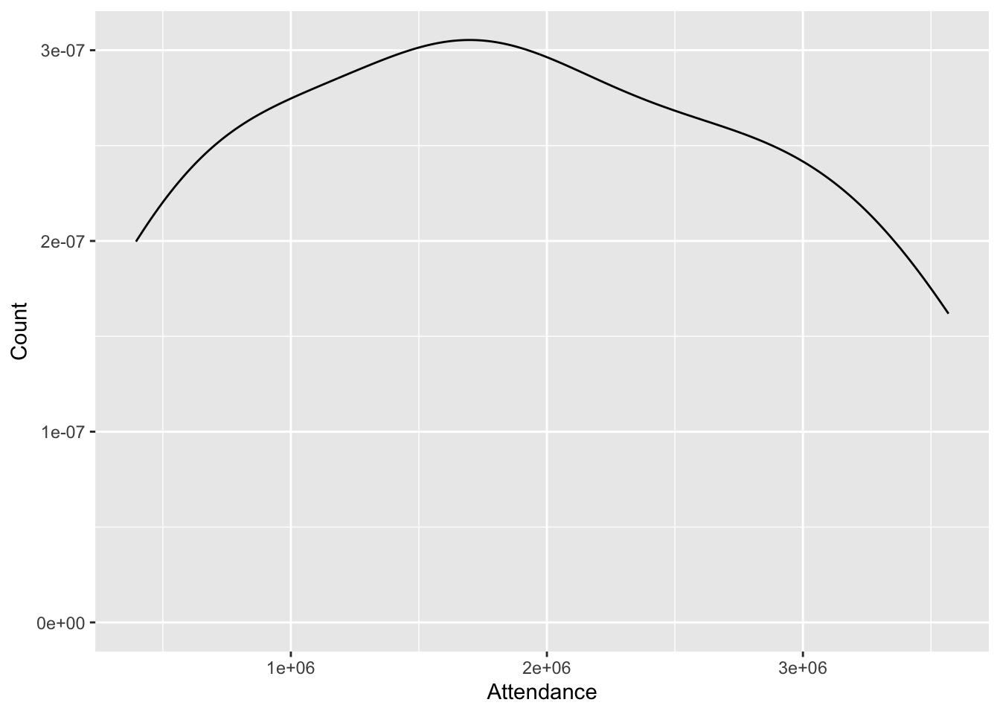
Code
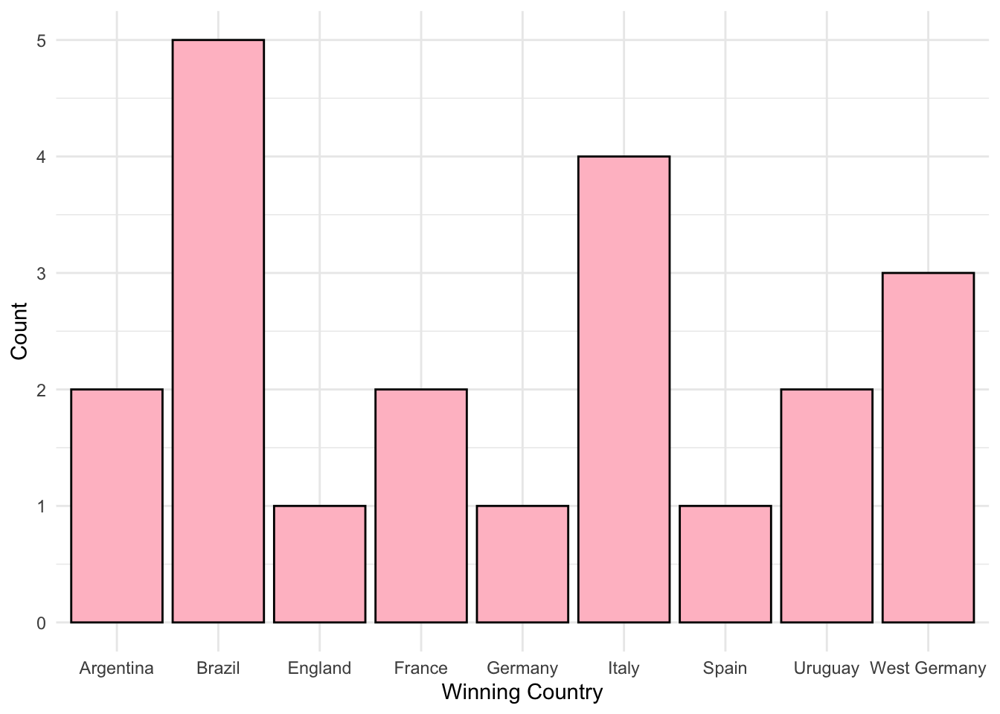
Part b
Check out the RStudio Data Visualization cheat sheet to learn more features of ggplot.
When done, don’t forgot to click Render Book and check the resulting HTML files. If happy, jump to GitHub Desktop and commit the changes with the message Finish uni viz and push to GitHub. Wait few seconds, then visit your portfolio website and make sure the changes are there.